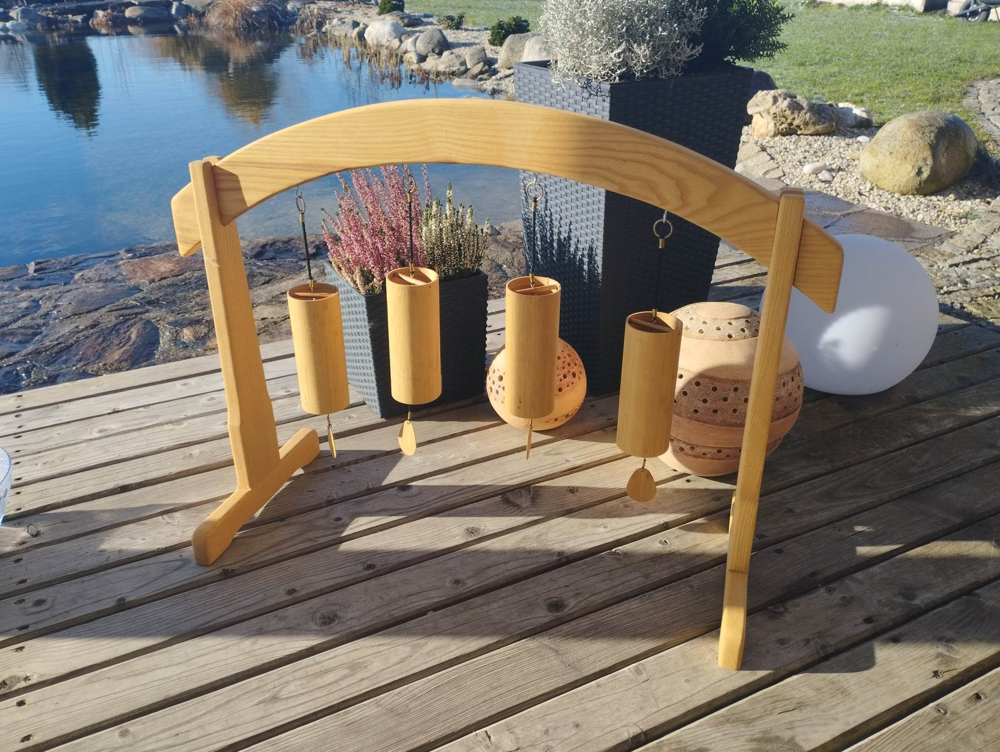

Zvonkohry Koshi
Hladivé a harmonizující zvuky a doteky těchto mistrovských nástrojů jsou nesmírně blahodárné a působivé.
Efekty těchto zvonkoher jsou velmi povznášející a terapeutické, velmi bohaté v alikvótních tónech a étericky vibrujících souzněních.
Koshi jsou vyráběny ve francouzských Pyrenejích jako výsledek mnoha let úsilí a jemného sofistikovaného mistrovství. Jejich tělo je z tenkého bambusu a uvnitř jsou precizně naladěné tóny s mimořádně bohatou rezonancí.
Zvonkohry Koshi jsou k dispozici ve 4 typech zvuků a ladění (země, voda, oheň, vzduch).
Je možné též hrát ve skupině na více zvonečků naráz a těšit se z harmonizujících rezonancí.
